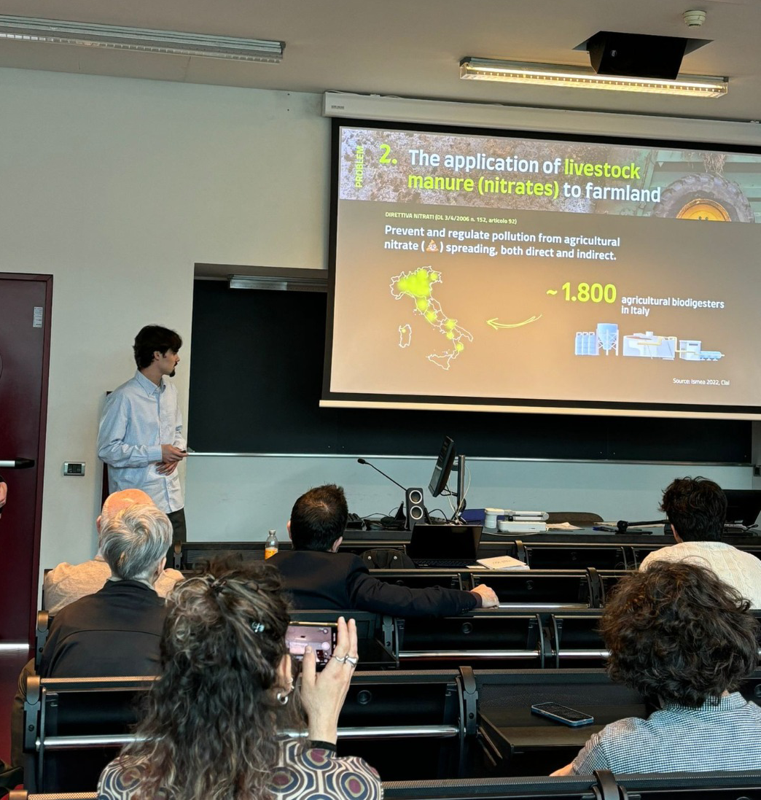
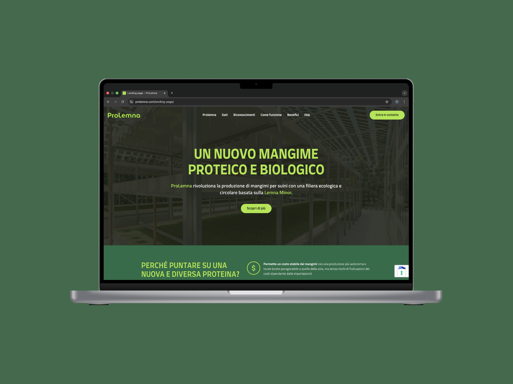

Hiking & walking
Long walks and trails as the most reliable way to think a problem through end-to-end.
About
A systemic & strategic designer turning deep-tech research and complex resource flows into circular, buildable opportunity.
I'm a Systemic and Strategic Designer with a multidisciplinary background shaped by my studies at the Politecnico di Torino, the Oslo School of Architecture (AHO) and the Università di Ferrara.
My practice is rooted in the ability to visualise, prototype, and transform complexity into circular opportunities through strategic research and systems thinking. As a Duckweed enthusiast and founder of ProLemna, I'm dedicated to shaping the future of sustainable agrifood systems — implementing Duckweed's potential to revolutionise the supply chain through systemic innovation.
Outside of design I find balance in nature: hiking, walking, the gym, and diving into a good book. I'm always eager to apply systemic tools to create meaningful, lasting impact.

Education
Fields of Work
Driven by a passion for continuous learning, my work has evolved into a deeply multidisciplinary practice focused on navigating the layers of contemporary complexity — tackling innovation through a systemic lens, treating every challenge not as a standalone product, but as a living ecosystem.
My expertise spans product design, service orchestration and speculative futures, with a core focus on making invisible connections both visible and functional. Drawing from Politecnico di Torino and AHO Oslo, I translate complex socio-technical data into clear, strategic narratives.
The goal is to bridge the gap between high-level strategy and the modular, practical execution required to scale a vision — committed to a design practice that is critical, sustainable, and accessible.
See the projects ↗Featured · Startup
Starting as a bachelor thesis, ProLemna won the 2024 Range Rover Leadership Academy and began its journey as a startup, subsequently incubated at 2i3T.
As founder and Business Developer, I translate the systemic approach into operational management — coordinating the strategic vision to ensure the circularity of the model, business plans and financial analysis, stakeholder relations with investors and partners, and project management across a multidisciplinary team toward market entry.



Outside the studio
Long walks and trails as the most reliable way to think a problem through end-to-end.
Discipline borrowed from training informs how I plan, iterate and ship — slow, consistent compounding.
From soil science to economic anthropology — diverse reading is where most of the bridges between fields appear.